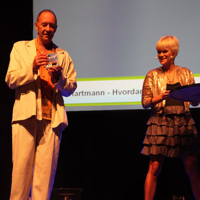

Masse morsomt å vinne på JavaZone
Om du gjør deg fortjent til det eller ikke kan være et spørsmål, det er i hvert fall masse fine premier å vinne for den som er aktiv og besøker de forskjellige standene på JavaZone: Fra Italiatur og kiting for to, til tandem fallskjermhopping og htc HERO.

Vi hadde en ambisjon om å besøke samtlige stander for å finne ut hva de hadde av konkuranser og premier. Og det var ikke få. Her har du en oversikt:
På standen til Tandberg kan du vinne et USB-kamera, hvis du slår en av dem i Foosball. Ett kamera for hver dag.
Hos Acando går det både på kunnskap kroppslige ferdigheter, og du blir den lykkelige vinner av et tandemhopp hvis du er i den 25 prosent-andelen som er best på snowboard og samtidig besvare et sett kunnskapsspørsmål.
Har du størst måldifferanse etter å ha spilt Foosball med en av de ansatte i Redpill Lindpro vinner du et DV-kamera.
På standen til Mesan har de en spørreudersøkelse med morsomme spørsmål om Mesan som ikke er veldig vanskelige. Parolen her er riktig og raskt, og du kan vinne en radiostyrt bil eller et radiostyrt fly, i miniatyr selvsagt.
Hos Tieto kan du vinne forskjellige ting. Når du scanner rfid-adgangskortet ditt får du opp et nummer og navnet på tre andre med tilsvarende nummer. Hvis du finner de tre andre et eller annet sted på messen, blir du den lykkelige vinner av kinobilletter til en av Oslo-kinoene.
Hos Sirius IT tilbyr de bowling på skjerm. Spiller du på fem av banenene i økende vanskelighetgrad ender du kanskje opp med en Tivoli radio.
Besøker du standen til Adg og fyller ut spørreskjemaet, vinner du et vanntett kamera som du kan ta med deg i bassenget eller badekaret når du kommer hjem. Du må bare kunne noe om Adg.
Hos Esito AS spiller du dart og deltar i en spørreundersøkelse. Her er premien en Popcorn Hour, som du kan koble til PCen eller TVen og se filmer, høre musikk osv.
Net Professionals tilbyr siste dag putting og premie i form av gavekort verdt kr. 10.000,- For dette kan du kjøpe deg sportsutstyr.
Hos Iterate får du, hvis du er heldig, gratis kurs til en verdi av kr. 5.000,- Da må du svare på en del spørsmål om hva du foretrekker av kurs osv.
Inmeta gjør det mulig for deg å vinne en iPod touch med 32 GB minne, hvis du svarer på fire spørsmål om selskapet.
Hos Ciber Norge AS kan du stikke av med en Playstation3 skin, dersom du svarer riktig på en del vesentlige spørsmål.
Know IT tilbyr spørsmål som det er klin umulig å svare på, ifølge de som står på standen. Hvis du svarer riktig på hvem du skal henvende deg til når du søker jobb i Know IT, og noen andre spørsmål, kan du bli den lykkelige vinner av en htc HERO, sort eller hvit.
ErgoGroup gir deg en mediespiller som du kan koble til PCen eller TVen, eller en Harddisk på 1TB.
Hos Conax trekker de en HD PVR digital dekoder og ett års abonnement på Canal Digital. Her er oppgaven befriende, du trenger bare å putte et visittkort i en bolle.
Bouvet ASA har flere konkurranser: Prøver du f. eks. et spill de har utviklet, basert på Pong, der klientene spiller mot hverandre over nettverk, kan det gi deg en Android telefon, eller et Android-kurs.
Webstep AS satser på en kunnskapskonkurranse med spørsmål om arkitektur og en meningsmåling, og profilerer seg som et ”great place to work”. Her er premien svært original: Et halvt års støvtørking hjemme, levert av rengjøringsselskapet City Maid.
Gapgemini Norge AS utfordrer deg med sin kodekonkurranse. Finner du ut hva som er feil med koden - og får testen til å virke - vinner du en waterproof USB stick med 16GB minne, eller en universal remote control.
Programutvikling har premie fra egne produkter i form av kurs til en verdi av 25.000 kroner. Da skal du prøve lykkehjulet deres to ganger og stoppe på null eller ti.
Trenger du et videokamera må du for all del besøke BBS. Her kan du vinne et Canon Legria HF2000 kamera, hvis du klarer å estimere den summen du oppnår ved å kaste dart.
Avenir gir deg kitekurs på sjø eller snø, hvis du klarer å finne flest mulig Java-ord baklengs/forlengs/sidelengs/diagonalt på en plansje full av bokstaver. Det viser seg at det er et Javaord mer på plansjen enn Avenir hadde forutsatt.
Edb Business Partners ASA spanderer en Merida Speeder sykkel med utrolig mange gear og smale dekk, hvis du klarer å svare på noen vanskelige spørsmål om selskapet.
Sun Microsystems tilbyr to kokker å komme hjem til deg og servere en middag til en verdi av kr. 5.000,- hvis du svarer på tre spørsmål. Det er ingen ringere enn Flying Culinary Circus som står for middagen.
IBM spør om jazz-plattformen og forutsetter kunnskap. Er kan du vinne en iPod nano hvis du er flink.
Visiti AS benytter seg av adgangskortet til konferansen og er den eneste som tilbyr deg premien med en gang. Da må du matcher det hemmelige vinnertallet. Premien er en Playstation.
Telenor gir deg muligheten til å gjøre deg fortjent til en Playground Phone med en rekke av deres applikasjoner - dersom du sender dem et bilde via mms.
Hos Enonic, som har en svært original stand med gråpapir på alle veggene, kan du forsøke å tegne den nye logoen de kommer til å fremstå med om ikke lenge. Den tegningen som er likest mulig den nye logoen vinner en Nespresso kaffemaskin.
Accenture tilbyr deg en iPod touch, hvis du svarer riktig på spørsmål om Accenture og Java. Du skal ha drevet noe med Java for å vinne.
Og til slutt så har vi selveste javaBIN: Her vinner du en skikkelig bra telefon, nærmere bestemt en htc HERO, eller ett av to gavekort til Eik restaurant. Men da må du vite mye om javaBIN og ikke svare at BIN står for ”Badeforening i Norge”.
Scandinavias biggest developer conference